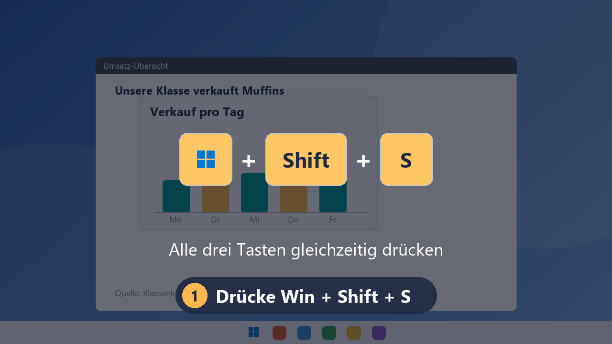
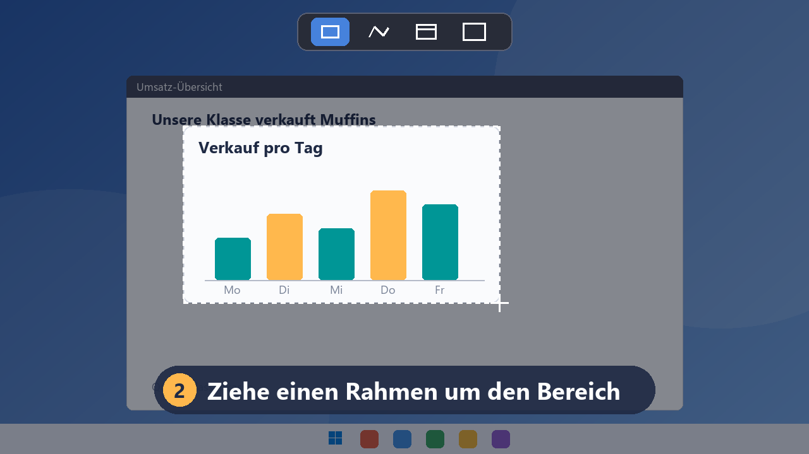
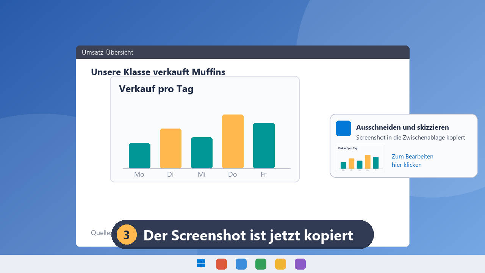

Screenshot erstellen
Dies ist ein Beispiel-Eintrag der Lehrkraft. Eure Artikel sehen genauso aus.
Erklärvideo, 36 Sekunden, ohne Ton | |
| Bereich | Grundlagen |
|---|---|
| Tastenkürzel | Win + Shift + S |
| System | Windows 10 und 11 |
| Dauer | etwa 2 Minuten |
| Autor | Beispiel (Lehrkraft) |
| Fassung | v1, geprüft |
Ein Screenshot (auch Bildschirmfoto) ist ein Bild von dem, was gerade auf dem Bildschirm zu sehen ist. Mit dem Tastenkürzel Win + Shift + S kannst du einen Ausschnitt aufnehmen und ihn danach in ein Dokument einfügen, zum Beispiel in Word oder in eine Wiki-Seite.
1 Voraussetzungen
Du brauchst einen Windows-Rechner (Windows 10 oder 11) und etwas, das du fotografieren willst. Mehr nicht.
2 Anleitung
1. Drücke Win + Shift + S
Halte alle drei Tasten gleichzeitig gedrückt. Der Bildschirm wird dunkel und oben erscheint eine kleine Auswahlleiste.


2. Ziehe einen Rahmen um den Bereich
Halte die linke Maustaste gedrückt und ziehe ein Rechteck um das, was du speichern willst. Lass dann los.


3. Der Screenshot ist jetzt kopiert
Unten rechts erscheint eine Meldung. Das Bild liegt in der Zwischenablage.


4. Mit Strg + V einfügen
Klicke ins Word-Dokument an die richtige Stelle und drücke Strg + V.

3 Typische Fehler
- Nichts passiert? Drücke alle drei Tasten gleichzeitig und lass sie sofort wieder los.
- Bild weg? Der Screenshot liegt nur in der Zwischenablage. Wer danach etwas anderes kopiert (Strg + C), überschreibt ihn.
- Dauerhaft speichern: Klicke auf die Meldung unten rechts und speichere das Bild mit Strg + S.
- Datenschutz: Auf dem Screenshot dürfen keine Namen, Passwörter oder Gesichter zu sehen sein.